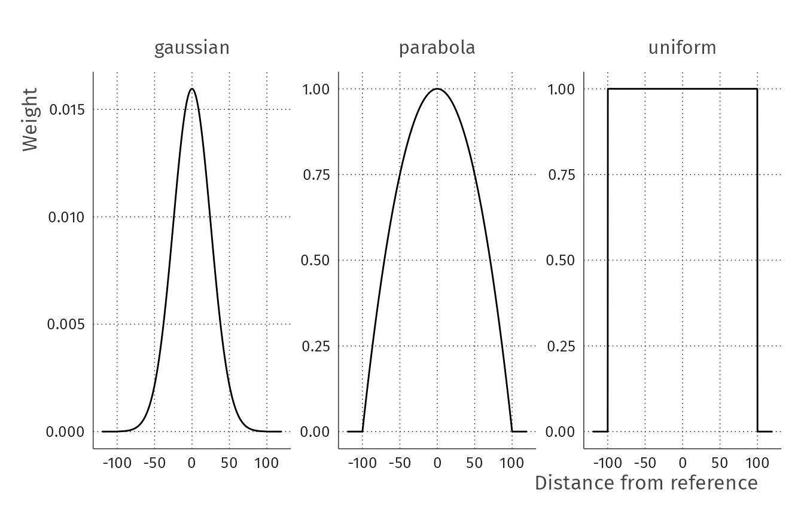
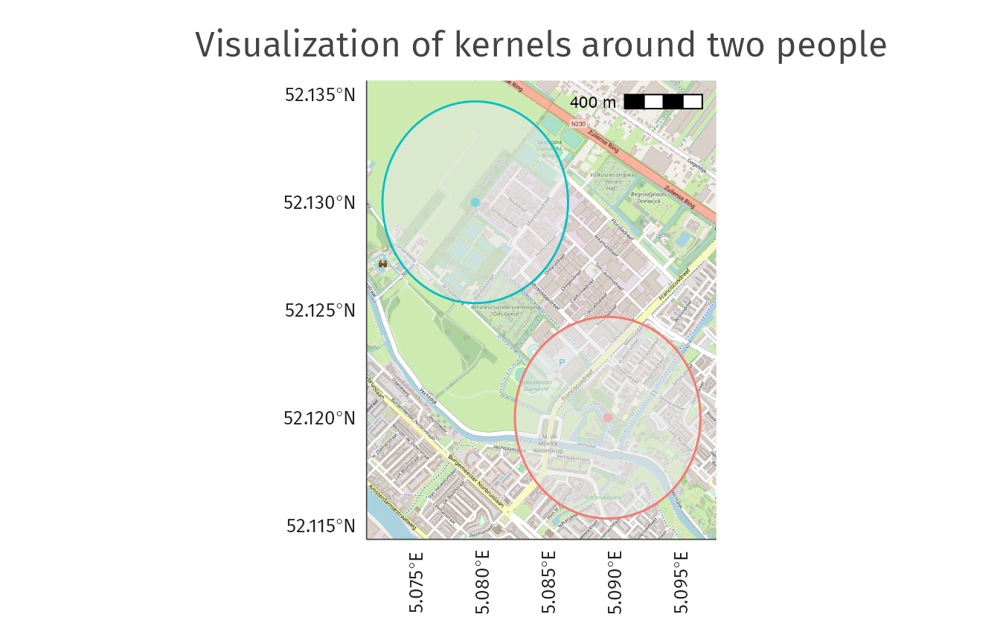

introduction_kernels.Rmd
library(osmenrich)Kernels play a center role in data enrichment using osmenrich, as they are the tool to weight the features retrieved from OpenStreetMap (OSM). If you do not know OSM yet and the main functionality of this package, please refer to the introductory vignette.
In this short vignette, you will learn:
What kernels are
How to use kernels to enrich your data using enrich_osm()
What the differences between types of kernels are
How to create your own kernel function
Kernels are functions used to weight and “aggregate” features retrieved from OSM. Kernels are used in the main function of the osmenrich package, enrich_osm(), using the variable kernel = "<name-kernel>" which allows you to specify the kernel function that will be used to summarize the features retrieved and it is shown in the example below.
sf_data_enriched <- sf_data %>%
enrich_osm(
# [...]
kernel = "uniform"
# [...]
)As kernels convert distance (or duration, depending on your necessity) vectors to single numbers, one can decide both the weight and the “aggregation” function to use to convert these vectors to a single number. The osmenrich package allows you to select both the kernel and the aggregation function used to reduce these vectors as follows:
kernel = can take the following inputs: "uniform" if, "gaussian" if, "parabola" if. This variable is set to "uniform" by default.
reduce_fun = can be any aggregation (or reduction) function such as sum, mean, median, etc. This variable is set to sum by default.
Thus, when choosing the kernel for your enrichment call, you usually will set these two variables as follows below
To make you understand the difference in the way the kernel weights the feature points retrieved in OSM, we plot the three main functions available in osmenrich. As you can see in the plot below, each kernels weights differently the features retrieved from OSM depending on the distance from the point of reference around which you are retrieving the points.

The gaussian kernel weights the features retrieved using the classical “bell curve” shape. The features on the border of the retrieved space are weighted zero.
The parabola kernel
Finally, the uniform kernel gives the same weight to all the features retrieved.
As stated before, aggregation functions are fundamental when choosing how to aggregate data retrived from OSM. While kernel helps you weight the points retrieved by their distances from the reference points, the aggregation function performs the task of reducing the weighted points to a single value.
These aggregation functions, called reduce_fun in enrich_osm(), take any standard R function. Therefore, if you just want to sum all the weighted points retrieved you will use reduce_fun = sum; if you instead want to take the mean of the retrieved points you will use reduce_fun = mean; for the median reduce_fun = median and so on…
Most of the time you will find yourself wanting to just sum the (un)weighted points retrieved, but keep in mind that you can also aggregate them using different functions.
In the examples above, you were introduced to the syntax needed to choose both the kernel and the aggregation (reduce_fun) function. Now, you will go through a basic example to see the differences between kernels.
Borrowing from the base example in our introductory vignette, you first create an example dataset to enrich sf_example.
# Load packages used in this example, install if needed
library(tidyverse)
library(sf)
library(osmenrich)
# Create an example dataset to enrich
sf_example <-
tribble(
~person, ~lat, ~lon,
"Alice", 52.12, 5.09,
"Bob", 52.13, 5.08,
) %>%
sf::st_as_sf(
coords = c("lon", "lat"),
crs = 4326
)Once the sf dataset is created, you can enrich it using the base syntax:
sf_enriched_uniform <- sf_example %>%
enrich_osm(
name = "n_waste_baskets",
key = "amenity",
value = "waste_basket",
r = 500
)Which, behind the scenes, sets automatically the kernel variable to "uniform" and the aggregation function to sum, as seen below.
sf_enriched_uniform <- sf_example %>%
enrich_osm(
name = "n_waste_baskets",
key = "amenity",
value = "waste_basket",
r = 500,
# Default parameters now written out for clarity
kernel = "uniform",
reduce_fun = sum
)
sf_enriched_uniform
#> Simple feature collection with 2 features and 2 fields
#> Geometry type: POINT
#> Dimension: XY
#> Bounding box: xmin: 5.08 ymin: 52.12 xmax: 5.09 ymax: 52.13
#> CRS: EPSG:4326
#> # A tibble: 2 x 3
#> person geometry n_waste_baskets
#> * <chr> <POINT [°]> <int>
#> 1 Alice (5.09 52.12) 75
#> 2 Bob (5.08 52.13) 1Taking as starting point the previous example, you can modify either the "kernel" variable or the reduce_fun variable to check the difference in the resulting aggregations.
Modify the "kernel" variable to "gaussian", keeping the aggregation function to sum, and print the enriched dataset.
sf_enriched_gaussian <- sf_example %>%
enrich_osm(
name = "n_waste_baskets",
key = "amenity",
value = "waste_basket",
r = 500,
# Default parameters now written out for clarity
kernel = "gaussian",
reduce_fun = sum
)
sf_enriched_gaussian
#> Simple feature collection with 2 features and 2 fields
#> Geometry type: POINT
#> Dimension: XY
#> Bounding box: xmin: 5.08 ymin: 52.12 xmax: 5.09 ymax: 52.13
#> CRS: EPSG:4326
#> # A tibble: 2 x 3
#> person geometry n_waste_baskets
#> * <chr> <POINT [°]> <dbl>
#> 1 Alice (5.09 52.12) 0.0227
#> 2 Bob (5.08 52.13) 0.00000589The column "n_waste_baskets" provides the sum of the number of baskets weighted by the gaussian kernel. While when the kernel was "uniform" the waste baskets retrieved were weighted equally, now the with the kernel set to "gaussian" waste baskets are weighted in relation to their distance from the geometry of each person. The differences in results are not important in the context of this example, but the simplicity of the data enrichment is.
We easily can visualize the circles of radius r (in this example r = 500) that are used to aggregate the features retrieved from OSM. As you can see in the image below, all the feature points within each circle will be weighted and aggregated using the kernel and reduce_fun specified in the enrich_osm() call.

You can also easily change the aggregation function, by modifying the reduce_fun variable. As before, we take the previous example as starting point.
Let’s modify the"reduce_fun" to "mean", change the name of the column accordingly, and print the result.
sf_enriched_uniform_mean <- sf_example %>%
enrich_osm(
name = "mean_waste_baskets",
key = "amenity",
value = "waste_basket",
r = 500,
kernel = "uniform",
# Modified aggregation function to mean
reduce_fun = mean
)
sf_enriched_uniform_mean
#> Simple feature collection with 2 features and 2 fields
#> Geometry type: POINT
#> Dimension: XY
#> Bounding box: xmin: 5.08 ymin: 52.12 xmax: 5.09 ymax: 52.13
#> CRS: EPSG:4326
#> # A tibble: 2 x 3
#> person geometry mean_waste_baskets
#> * <chr> <POINT [°]> <dbl>
#> 1 Alice (5.09 52.12) 0.510
#> 2 Bob (5.08 52.13) 0.00680Comparing it with the enriched dataset sf_enriched_uniform created before, you can see that the newly added column now reflects the metric chosen to aggregate the data (mean instead of sum).